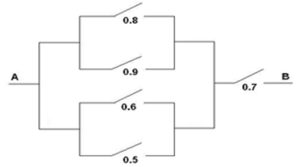

1.4 Ejercicios
Sea \((X,Y)\) es un vector aleatorio con distribución uniforme en el cuadrado \([-1,1]\times\lbrack-1,1]\) de área 4.
Aproximar mediante simulación \(P\left(X + Y \leq 0 \right)\) y compararla con la probabilidad teórica (obtenida aplicando la regla de Laplace \(\frac{\text{área favorable}}{\text{área posible}}\)).
Aproximar el valor de \(\pi\) mediante simulación a partir de \(P\left( X^2 +Y^2 \leq 1 \right)\).
Ver solución en Sección D.1.1.
Consideramos el experimento de Bernoulli consistente en el lanzamiento de una moneda.
Empleando la función
sample, obtener 1000 simulaciones del lanzamiento de una moneda(0 = cruz, 1 = cara), suponiendo que no está trucada. Aproximar la probabilidad de cara a partir de las simulaciones.En R pueden generarse valores de la distribución de Bernoulli mediante la función
rbinom(nsim, size=1, prob). Generar un gráfico de lineas considerando en el eje \(X\) el número de lanzamientos (de 1 a 10000) y en el eje \(Y\) la frecuencia relativa del suceso cara (puede ser recomendable emplear la funcióncumsum).
Ver solución en Sección D.1.2.
Simular el paso de corriente a través del siguiente circuito, donde figuran las probabilidades de que pase corriente por cada uno de los interruptores:

Considerar que cada interruptor es una variable aleatoria de Bernoulli independiente para simular 1000 valores de cada una de ellas.
TRUE) y 0 (FALSE).
Recíprocamente, cualquier número puede ser tratado como lógico (al estilo de C).
El entero 0 es equivalente a FALSE y cualquier entero distinto de 0 a TRUE.
Ver solución en Sección D.1.3.
En 1651, el Caballero de Méré le planteó a Pascal una pregunta relacionada con las apuestas y los juegos de azar: ¿es ventajoso apostar a que en cuatro lanzamientos de un dado se obtiene al menos un seis? Este problema generó una fructífera correspondencia entre Pascal y Fermat que se considera, simbólicamente, como el nacimiento del Cálculo de Probabilidades.
Escribir una función que simule el lanzamiento de \(n\) dados. El parámetro de entrada es el número de lanzamientos \(n\), que toma el valor 4 por defecto, y la salida debe ser
TRUEsi se obtiene al menos un 6 yFALSEen caso contrario.Utilizar la función anterior para simular \(nsim=10000\) jugadas de este juego y calcular la proporción de veces que se gana la apuesta (obtener al menos un 6 en \(n\) lanzamientos), usando \(n=4\). Comparar el resultado con la probabilidad teórica \(1-(5/6)^{n}\).
Ver solución en Sección D.1.4.
Continuando con el ejemplo de la Sección 1.1.1 (álbum con \(n = 75\) cromos y sobres con \(m = 6\)). A partir de \(nsim=2000\) simulaciones de coleccionistas de cromos, aproximar por simulación la evolución del proceso de compra de un coleccionista (número de cromos distintos dependiendo de los sobres comprados).
Ver solución en Sección D.1.5.